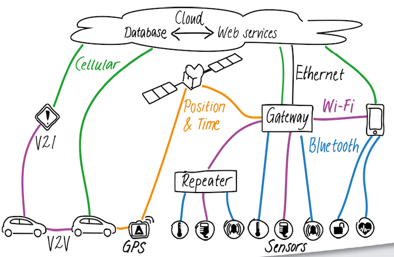

WoT 与 IoT
[TOC]
目前，物联网系统主要有两种架构：传统垂直领域 “无线传感器网/IoT” 和基于 Web 技术 “Web Service/SOA” 的 WOT 。WoT 优势在于开放、成本，适用于有成本压力、业务丰富的场景；而传统 “无线传感器网/IoT” 适合高安全性、高实时的场景。
物联网连接方案

ruff.io
Ruff 是一个敏捷开发智能硬件的系统平台。它包含 Ruff SDK、Ruff OS，Rap Registry 等。
- Ruff SDK 工具集，拥有 Rap、Debugger、Console、Simulator 等多种开发工具。
- Ruff OS 兼容多个平台的运行环境，它支持嵌入式 Linux， MCU 单片机领域等。它让您不用关心底层硬件类型，只集中注意力在应用逻辑上，根据您的应用需要消耗的资源选取相应硬件平台。
- Rap Registry 一个寻找、使用、提交驱动、库，框架等代码的代码共享平台。它可以让开发者大量重复使用已有的代码，避免重复开发的浪费，提升开发效率。
参考
官方
- Ruff官网
- ruff-drivers：官方驱动
- ruff-standard：Ruff 代码风格
- ruff-issues：Ruff Issues is a issue collector for Ruff
- Ruff 和 Raspberry Pi 的区别是什么？
工具
- RuffHelper：Ruff 开发辅助工具，把常用的 rap 命令可视化操作
- ruff-t：T (Testing Framework) for Ruff
- rvm：Ruff Version Manager
- ruff-fetch：A simplified version of
window.fetchwritten for Ruff - ruff-promise：ES6 Promise for Ruff (https://ruff.io) based on ThenFail v0.4 (https://github.com/vilic/thenfail).
应用
- ruff-menu：Awesome Menu for Ruff LCD (lcd1602)
- ruff-home：Home (Web Framework) for Ruff
- RuffApps：一些 Ruff 应用
- devices.ruff：Testing devices like button, buzzer, temperature sensor, and lcd
Jetson TX1 and Jetson TK1
NVIDIA Jetson TX1是首款针对深度学习神经网络设计的嵌入式超级计算机，其上一代产品Jetson TK1于NVIDIA GTC 2014上亮相。
库
CUDA
VisionWorks
- VisionWorks：计算机视觉（CV）和图像处理的软件开发包
- workshop 视频：introduction
- workshop 视频：simple CV tasks with Vision Works
- OpenVX
OpenCV
- OpenCV：开源计算机视觉库
开发工具
- Tegra Graphics Debugger：控制台级调试工具
- Tegra System Profiler：多核 CPU 采样分析器
- PerfKit：帮助调试和配置 OpenGL 和 Direct3D 应用程序的性能工具
Jetson TK1
- NVIDIA Jetson TK1 学习与开发
- Jetson TK1的一些事项
- Jetson TK1 Tegra K1 摄像头 MIPI CSI-2 模块 OV5640
- Jetson TK1 挂载 SanDisk 128G SD 卡
- Jetson TK1 麦克风 SONY ECM-DS70P 模块
Jetson TX1
参考
- Midnight Commander (MC)：文件管理
- CMake：跨平台的安装（编译）工具
- Linux 内核
- Ubuntu armhf 源
- Elinux Jetson TK1
- 爱奇艺 Jetson TK1 教程
- Jetson TK1 介绍与配置